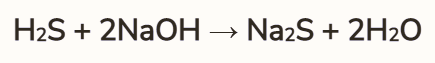
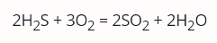

Základne informácie
Sulfán je chemická zlúčenina, ktorá sa skladá z dvoch atómov vodíka a jedného atómu síry . Je to bezfarebný plyn so zápachom podobným hnijúcim vajíčkam. V prírode sa vyskytuje pri rozklade organických látok obsahujúcich síru a je považovaná za toxickú .
Reakcie
Sulfán je kyslý plyn a môže reagovať so zásadami , ako je napríklad hydroxid sodný , a tvoriť síranové soli . Reakcia je nasledovná:
Pri vyšších teplotách môže reagovať so vzdušným kyslíkom a tvoriť oxid sírový :
Sulfán sa tiež môže oxidovať na elementárnu síru, pričom sa uvoľňuje síra:

Využitie
Má niekoľko využití v rôznych odvetviach.
Výroba síry:
- výroba elementárnej síry
- počas ratifikácie ropy alebo zemného plynu sa následnou oxidáciou získava síra
Detekcia a analýza
- detekcia a meranie stopových množstiev ťažkých kovov vo vode
- príprava síranových štandardov
- chemické analýzy
Chemický výskum
- redukčné činidlo
- skúmanie chemických procesov a reakcií